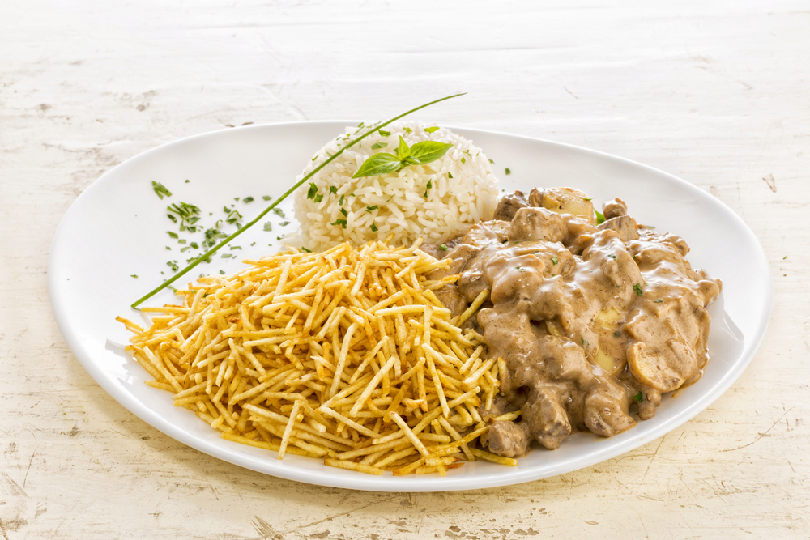

Estrogonofe

Estrogonofe é um prato originário da culinária russa composto de cubos de carne bovina servidos num molho de creme
de leite. Desde suas origens no século XIX, o prato popularizou-se em muitos países europeus, norte-americanos e no
Brasil, sempre com variações consideráveis da receita original.
Ingredientes
- 1 kg de carne de sua preferência
- Champignon a gosto
- 2 latas de creme de leite
- 3 tomates picados
- 3 colheres (sopa) de azeite
- 3 cebolas médias
- 2 colheres (sopa) de ketchup
- 1 cubo de caldo de carne dissolvido em 100 ml de água
sal e pimenta-do-reino a gosto
Modo de Preparo
- Em uma panela, adicione o óleo, a carne, a cebola, os tomates, o caldo de carne e cozinhe tudo por 20 minutos;
- Depois de cozido, despeje o ketchup e o champignon e volte a cozinhar tudo até atingir o ponto de um
consistente;
- Desligue o fogo e acrescente o creme de leite;
- Mexa até virar uma mistura homogênea;
- Pronto! Basta servir.